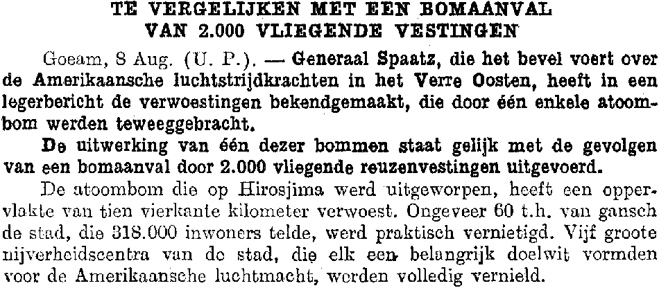

<!DOCTYPE html PUBLIC "-//W3C//DTD XHTML 1.0 Strict//EN"
"http://www.w3.org/TR/xhtml1/DTD/xhtml1-strict.dtd">

<html xmlns="http://www.w3.org/1999/xhtml" xml:lang="en" lang="en" xmlns:fb="http://ogp.me/ns/fb#" />

<head>

<meta http-equiv="Content-Type" content="text/html; charset=utf-8" /> 

<title>How OCR Works | A Close Look at Optical Character Recognition</title>

<meta name="description" content="An in-depth look at 
OCR technology. Discover how image scanners and 
Optical Character Recognition work, learn about 
typefaces, alphabets and more." />

<meta name="keywords" content="OCR, Optical Character Recognition, 
image scanners, typefaces, fonts, how OCR works, what is OCR, 
what does OCR do, what does OCR mean" />

<meta name="twitter:widgets:csp" content="on">

<meta name="twitter:card" content="summary" />
<meta name="twitter:title" content="How OCR Works | A Close Look at Optical Character Recognition" />
<meta name="twitter:description" content="An in-depth look at OCR technology. Discover how image scanners and Optical Character Recognition work, learn about typefaces, alphabets and more." />
<meta name="twitter:url" content="https://how-ocr-works.com" />
<meta name="twitter:image" content="https://how-ocr-works.com/index/old-document.jpg" />

<meta property="og:site_name" content="How OCR Works | A Close Look at Optical Character Recognition" />
<meta property="og:type" content="website" />
<meta property="og:locale" content="en_US" />
<meta property="og:title" content="How OCR Works | A close look at Optical Character Recognition" />
<meta property="og:description" content="An in-depth look at OCR technology. Discover how image scanners and Optical Character Recognition work, learn about typefaces, alphabets and more." />
<meta property="og:url" content="https://how-ocr-works.com" />
<meta property="og:image" content="https://how-ocr-works.com/index/old-document.jpg" />
<meta property="og:image:type" content="image/jpeg" />
<meta property="og:image:width" content="950" />
<meta property="og:image:height" content="416" />

<meta property="fb:admins" content="100007705362252" />

<meta name="google-site-verification" content="googleb2a83322950f5c71" />

<meta name="msvalidate.01" content="" />

<meta name="p:domain_verify" content="ba9c699aa607518e1dbbf5aa1f7cf324"/>

<meta name="subject" content="Optical Character Recognition (OCR)" />

<meta name="googlebot" content="all" />
<meta name="bingbot" content="all" />
<meta name="robots" content="all" />

<meta name="robots" content="noodp" />

<link rev="made" href="mailto:ivo.vynckier@telenet.be" title="Ivo Vynckier" />
<link rev="made" href="mailto:webmaster@how-ocr-works.com" title="Ivo Vynckier" />

<meta name="reply-to" content="ivo.vynckier@telenet.be" />
<meta name="reply-to" content="webmaster@how-ocr-works.com" />

<meta name="author" content="Ivo Vynckier" />

<meta name="generator" content="Notepad++" />

<link type="text/plain" rel="author" href="https://how-ocr-works.com/humans.txt" />

<meta name="copyright" content="&#169; Ivo Vynckier. All rights reserved." />

<meta name="rating" content="general" />
<meta name="rating" content="safe for kids" />

<link href="website.css" rel="stylesheet" media="all" />
<link href="https://fonts.googleapis.com/css?family=Special Elite" rel="stylesheet" type="text/css" />

<link href="favicon.ico" rel="icon" type="image/x-icon" />
<link href="favicon.ico" rel="shortcut icon" type="image/x-icon" />
<link href="favicon.ico" rel="shortcut icon" type="image/vnd.microsoft.icon" />

<meta name="viewport" content="width=device-width, initial-scale=1" />
<meta name="MobileOptimized" content="width" />
<meta name="HandheldFriendly" content="true" />

</head>

<!-- Google tag (gtag.js) -->
<script async src="https://www.googletagmanager.com/gtag/js?id=G-TDERQSN9SP"></script>
<script>
  window.dataLayer = window.dataLayer || [];
  function gtag(){dataLayer.push(arguments);}
  gtag('js', new Date());

  gtag('config', 'G-TDERQSN9SP');
</script>

<body itemscope itemtype="http://schema.org/WebPage">

<meta itemprop="isFamilyFriendly" content="True" />
<meta itemprop="inLanguage" content="en" />

<bgsound src="./index/typewriter1.wma" volume="0" loop="1" />

<div id="fb-root"></div>
<script>(function(d, s, id) {
  var js, fjs = d.getElementsByTagName(s)[0];
  if (d.getElementById(id)) return;
  js = d.createElement(s); js.id = id;
  js.src = "//connect.facebook.net/en_US/all.js#xfbml=1";
  fjs.parentNode.insertBefore(js, fjs);
}(document, 'script', 'facebook-jssdk'));</script>

<div itemprop="breadcrumb">

<span class="small">
<marquee id="marquee" bgcolor="#D3D3D3" direction="left" scrollamount="4" scrolldelay="100">
<a href="languages/latin-alphabet.html" target="_blank">What&rsquo;s the origin of the word &rdquo;alphabet&rdquo;?</a>
</marquee>
</span>

<div class="navigation">
<table align="center" valign="center" border="1px" border-style="solid" color="#eee" 
border-spacing="1px" cellspacing="0px" cellpadding="8px" summary="Navigational panel">
<tr>
<td><a href="index.html">Home page</a></td>
<td><a href="intro/intro.html">Intro</a></td>
<td><a href="scanners/scanners.html">Scanners</a></td>
<td><a href="images/images.html">Images</a></td>
<td><a href="history/history.html">History</a></td>
<td><a href="OCR/OCR.html"><abbr title="Optical Character Recognition">OCR</abbr></a></td>
<td><a href="languages/languages.html">Languages</a></td>
</tr>
<tr>
<td><a href="accuracy/accuracy.html">Accuracy</a></td>
<td><a href="output/output.html">Output</a></td>
<td><a href="BCR/BCR.html"><abbr title="Business Card Reading">BCR</abbr></a></td>
<td><a href="pen-scanners/pen-scanners.html">Pen scanners</a></td>
<td><a href="sitemap.html">Sitemap</a></td>
<td><a href="search.html">Search</a></td>
<td><a href="contact.html">Contact &ndash; Feedback</a></td>
</tr>
</table>
</div>

</div>

<p span class="homepage-title1" itemprop="name">How <abbr title="Optical Character Recognition">OCR</abbr> Works</p>

<p span class="homepage-title2">
<span itemprop="alternativeHeadline">A Close Look at <span itemprop="keywords">Optical Character Recognition</span></span>
</p>

<p align="center">
<a href="intro/intro.html">

</a>
</p>

<div class="small">

<p align="center" style="margin-top: -5px;">
Click on the graphic to enter the web site
</p>

<p align="center">
&copy;<span itemprop="copyrightYear">2014-2025</span> <span itemprop="copyrightHolder">Ivo Vynckier</span>
</p>

</div>

<p align="center">
<a href="https://www.pinterest.com/login/?next=/pin/create/button/" class="pin-it-button" data-pin-do="buttonPin" data-pin-config="beside"></a>
&nbsp; &nbsp; &nbsp; &nbsp; &nbsp; &nbsp; &nbsp; &nbsp;
<a href="https://twitter.com/intent/tweet?url=&original_referer=" class="twitter-share-button" data-url="https://how-ocr-works.com" data-text="&ldquo;How OCR Works&rdquo;: a close look at Optical Character Recognition, image scanners, alphabets and typefaces" data-related="ivovynckier" data-lang="en">Tweet</a>
&nbsp; &nbsp; &nbsp; &nbsp; &nbsp; &nbsp;
<script src="http://platform.linkedin.com/in.js" type="text/javascript">lang: en_US</script><script type="IN/Share" data-counter="right" data-url="https://how-ocr-works.com"></script>
</p>

<script type="text/javascript">
(function (w, d, load) {
  var script, 
  first = d.getElementsByTagName('SCRIPT')[0],  
  n = load.length, 
  i = 0,
  go = function () {
    for (i = 0; i < n; i = i + 1) {
      script = d.createElement('SCRIPT');
      script.type = 'text/javascript';
      script.async = true;
      script.src = load[i];
      first.parentNode.insertBefore(script, first);
    }
  }
  if (w.attachEvent) {
    w.attachEvent('onload', go);
  } else {
    w.addEventListener('load', go, false);
  }
}(window, document, 
  ['//assets.pinterest.com/js/pinit.js']
));    
</script>

<script>
!function(d,s,id){var js,fjs=d.getElementsByTagName(s)[0];
if(!d.getElementById(id)){js=d.createElement(s);
js.id=id;
js.src="https://platform.twitter.com/widgets.js";
fjs.parentNode.insertBefore(js,fjs);
}}(document,"script","twitter-wjs");
</script>

<p align="center">
<fb:like href="https://how-ocr-works.com" width="380" layout="standard" action="like" show_faces="false" share="true"></fb:like>
</p>

<p align="center">
<fb:follow href="https://www.facebook.com/ivo.vynckier" width="380" colorscheme="light" layout="standard" show_faces="false"></fb:follow>
</p>

<p align="center">
<style>.ig-b- { display: inline-block; }
.ig-b- img { visibility: hidden; }
.ig-b-:hover { background-position: 0 -60px; } .ig-b-:active { background-position: 0 -120px; }
.ig-b-v-24 { width: 137px; height: 24px; background: url(https://badges.instagram.com/static/thirdparty/images/badges/ig-badge-view-24.png/41dd6fb5d8eb.png) no-repeat 0 0; }
@media only screen and (-webkit-min-device-pixel-ratio: 2), only screen and (min--moz-device-pixel-ratio: 2), only screen and (-o-min-device-pixel-ratio: 2 / 1), only screen and (min-device-pixel-ratio: 2), only screen and (min-resolution: 192dpi), only screen and (min-resolution: 2dppx) {
.ig-b-v-24 { background-image: url(//badges.instagram.com/static/images/ig-badge-view-sprite-24@2x.png); background-size: 160px 178px; } }</style>
<a href="https://www.instagram.com/ivo.vynckier/?ref=badge" class="ig-b- ig-b-v-24"></a>
&nbsp;&nbsp;&nbsp;&nbsp;&nbsp;&nbsp;&nbsp;&nbsp;
<a data-pin-do="buttonFollow" href="https://www.pinterest.com/ivovynckier/">Follow Ivo Vynckier on Pinterest</a>
<script type="text/javascript" async src="https://assets.pinterest.com/js/pinit.js"></script>
</p>

<div itemprop="breadcrumb">

<div class="small">

<p align="center">
<a href="index.html">Home page</a> &mdash;
<a href="intro/intro.html">Intro</a> &mdash;
<a href="scanners/scanners.html">Scanners</a> &mdash;
<a href="images/images.html">Images</a> &mdash;
<a href="history/history.html">History</a> &mdash;
<a href="OCR/OCR.html"><abbr title="Optical Character Recognition">OCR</abbr></a> &mdash;
<a href="languages/languages.html">Languages</a> &mdash;
<a href="accuracy/accuracy.html">Accuracy</a> &mdash;
<a href="output/output.html">Output</a> &mdash;
<a href="BCR/BCR.html"><abbr title="Business Card Reading">BCR</abbr></a> &mdash;
<a href="pen-scanners/pen-scanners.html">Pen scanners</a> &mdash;
<a href="sitemap.html">Sitemap</a> &mdash;
<a href="search.html">Search</a> &mdash;
<a href="contact.html">Contact &ndash; Feedback</a>
</p>

</div>

</div>

</body>

</html>
